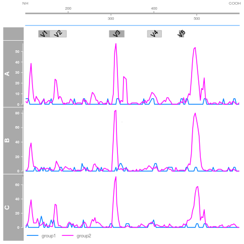

Software
Following is a list of R packages I am currently maintaining. These packages are available on my GitHub page or the RGLab's GitHub page.
ImmuneSpaceR
An R API to download an manipulate data from ImmuneSpace. The package uses references classes for efficient caching of the data.
PICS
For the analysis of ChIP-Seq data, PICS (Probabilistic Inference for ChIP-Seq) identifies genomic regions bound by transcription factors. The algorithm is implemented in C and makes use of parallel computing.
PING
PING increments on PICS and propose a method for the detection of nucleosome positions for both single-end and paired-end sequencing data. The packages also includes graphic tools for the representation and comparison of results.
pepStat
This package predicts antibody binding sites on peptides using microarray data.
pepDat
pepDat is a data package that contains datasets and sample files used for examples and vignettes in the peptide microarray analysis pipeline.
Pviz
Pviz is an R package for peptide visualisation inspired by and depending on the popular Gviz. It introduces new types of track and extends the existing ones in order to deal with amino-acid based data such as peptide microarray.
LumiR
Currently a work in progress, LumiR provides S4 structures and functions to manipulate and analyse Luminex Bead Array Multiplex Assay data. It is designed to handle raw data from the three main manufacturer: Luminex, MiraiBio and BioRad.

Summary plot of a PING analysis

Pviz plot of antibody response frequency calculated by pepStat analysis

Fitting of 5-Parameter Logistic curves using LumiR